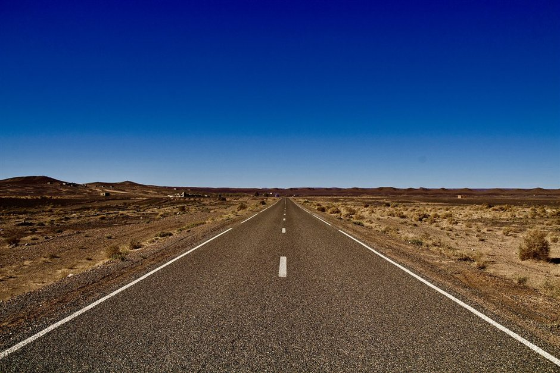

Most travelers planning a trip to the Erg Chebbi dunes assume they have to endure a grueling two-day road journey from Marrakesh or a long, winding transit from Fes. While crossing the High Atlas mountains or the Middle Atlas cedar forests is a classic Moroccan experience, it eats up a significant portion of a short vacation.
Moulay Ali Cherif Airport in Errachidia (ERH) sits roughly 130 kilometers north of Merzouga. By flying into this regional hub, you bypass the massive cross-country driving loops entirely, turning a multi-day transit into a straightforward two-hour airport transfer.
The Route and Real Travel Times
Driving from Marrakesh to Merzouga takes at least 9 to 10 hours of actual seat time over two days, usually broken up by a night in the Dades or Todra gorges. Starting from Fes cuts that down to about 7 to 8 hours, but it is still a full day staring out a vehicle window.
When you land at Errachidia ERH, your remaining journey to the desert border is about two hours on well-paved national roads. You trade mountain switchbacks and roadside rest stops for a short, direct desert-edge transfer.
- Marrakesh to Merzouga road route: 560 km (9-10 hours driving)
- Fes to Merzouga road route: 460 km (7-8 hours driving)
- Errachidia (ERH) to Merzouga: 130 km (2 hours driving)
Flights, Airlines, and Schedules
Royal Air Maroc operates regular domestic flights from Casablanca (CMN) into Errachidia. Because these are typically once-daily turboprop flights, your itinerary must align with their schedule rather than the other way around.
If you are coming internationally, you will land in Casablanca, clear customs, and catch the quick domestic connection to ERH. Missing that single daily flight means an unexpected night in Casablanca, so plan your buffer times carefully.
- Primary carrier: Royal Air Maroc via Casablanca
- Flight duration from Casablanca: Roughly 1 hour 15 minutes
- Frequency: Usually one daily flight, subject to seasonal adjustments
The Trade-Offs: Cost vs. Scenery
The biggest downside to the ERH shortcut is financial. Domestic flights in Morocco are rarely discounted, and paying for international plus domestic legs often increases your transport budget compared to booking a standard desert tour cost package that includes ground transport from the major cities.
You also miss the dramatic visual progression of the country. Driving across the Tichka Pass lets you watch the landscape transform from fertile plains to stone plateaus and finally to sand. Flying drops you straight at the doorstep, which is efficient for time-strapped travelers but lacks the slow transition.
- Higher total transport budget due to domestic airfares
- Loss of the classic Atlas Mountain road trip experience
- Maximized actual time spent in the desert rather than in transit
How We Coordinate Errachidia Pickups
If you choose the ERH route, we arrange for one of our drivers to meet you right outside the small terminal building with a sign displaying your name. From there, you load your bags directly into our 4x4 and head south toward the dunes.
This setup works exceptionally well for families with young kids and elderly travelers who struggle with long, winding vehicle hours. You get straight to the camp without the exhaustion of a multi-day road crossing.
- Direct airport meet-and-greet service
- Private vehicle transfer straight to Merzouga or your riad
- Flexible stops for lunch or supplies along the short drive south
| Road from Marrakesh | Errachidia Flight (ERH) | |
|---|---|---|
| Total Transit Time | 10-12 hours over 2 days | 2 hours from ERH airport |
| Scenery | High Atlas, gorges, valleys | Arid plateaus, quick desert entry |
| Motion Sickness Risk | High (mountain passes) | Low (short, flat drive) |
| Cost Factor | Included in standard tour | Higher (domestic flight tickets) |
| Best For | Slow travelers, road-trip lovers | Time-poor visitors, families |

Illustration, not a photograph — for the real thing, you'll have to stand on the ridge yourself.
Quick answers
A few follow-up questions travelers ask about this.
Can I fly directly from Marrakesh to Errachidia?
Direct flights between Marrakesh and Errachidia are rare or non-existent depending on the season. Almost all routes require a brief layover at Mohammed V International Airport in Casablanca.
Is the road from Errachidia to Merzouga safe?
Yes. The N13 highway connecting Errachidia through Erfoud to Merzouga is a well-paved, major national route with very light traffic compared to the mountain passes further west.
Can Route of the Dunes organize my airport transfer?
Absolutely. We monitor your flight status, meet you at ERH arrivals, and handle the private transfer down to the Erg Chebbi dunes and back.
Planning your own route?
Tell us your dates and what matters to you — we'll answer with a straight recommendation, not a brochure.
Send an inquiry See the itineraries